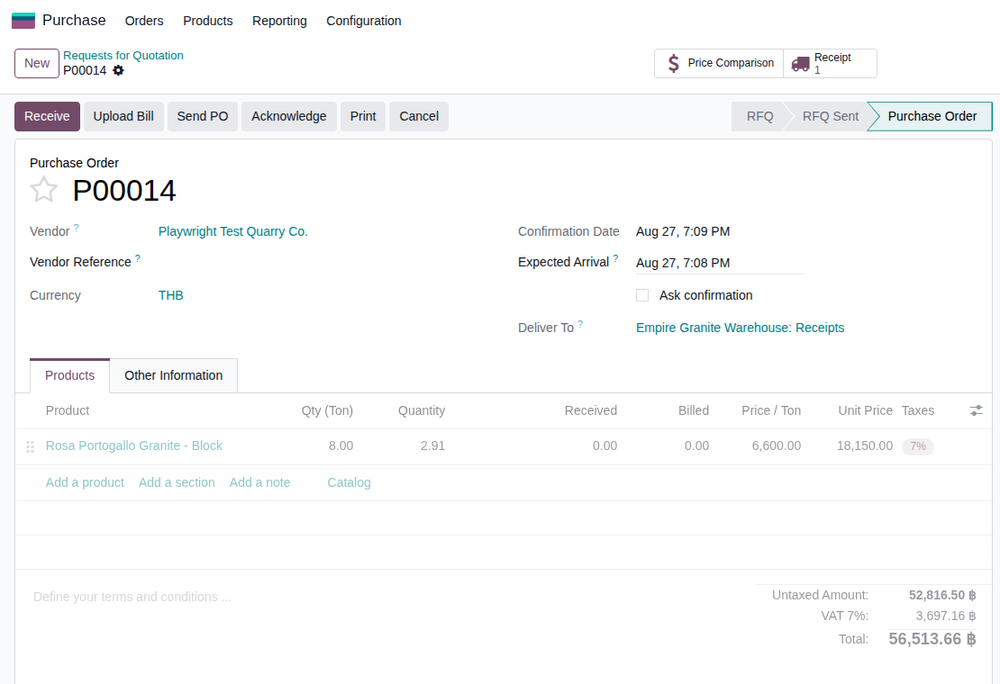
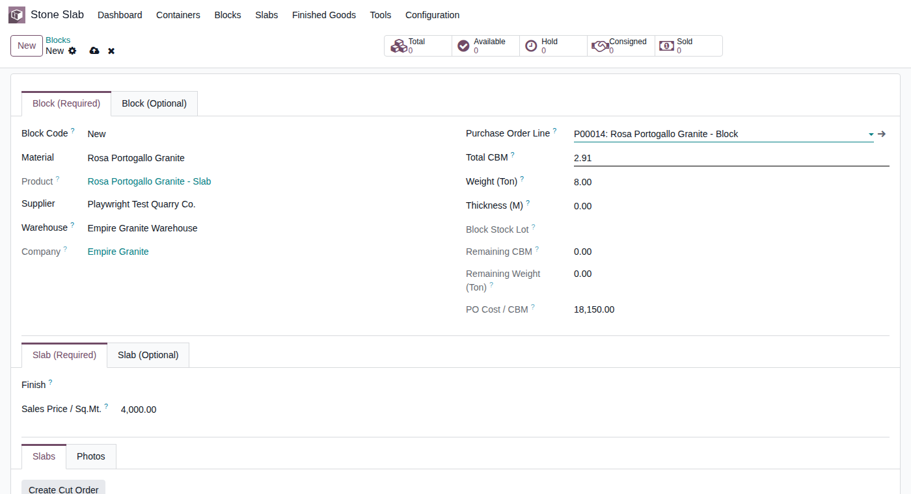
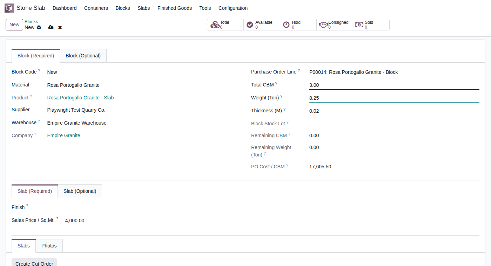
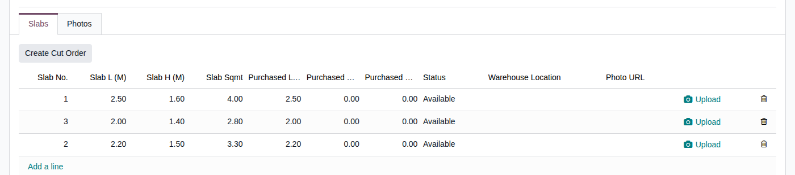
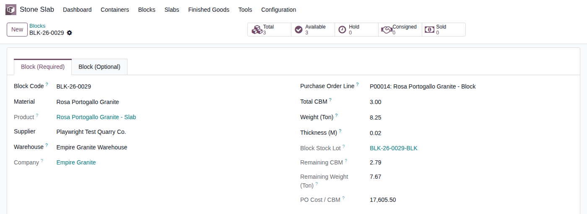

ตัน ⇄
คิว
Build + Test ผ่านแล้ว
Empire Granite · Stone Slab Inventory — Custom Workflow Design
ซื้อหินเป็นตัน → คำนวณและ
กระจาย Cost อย่างไร
(พร้อมวิธีตรวจสอบย้อนกลับ)
ใช้ข้อมูลจริงในระบบทั้งหมด — ใบสั่งซื้อจริง ก้อนหินจริง และแผ่นหินที่ตัดจริง — พาไล่ดูทีละขั้นตอนว่าตัวเลขต้นทุนเดินทางจากวันสั่งซื้อไปจนถึงแผ่นหินพร้อมขายอย่างไร และถ้าตัวเลขดูไม่ตรงกัน จะตรวจสอบย้อนกลับได้จากตรงไหน
EMG-O Custom Workflow Design · Cost Calculation & Traceability
28 ส.ค. 2026
เปิดเรื่อง — โจทย์ต้นทาง
หน้างานสั่งซื้อหินเป็น "ตัน" แต่ระบบเก็บต้นทุนเป็น "คิว" (CBM)
?
คำถามจากการประชุมทบทวนงาน
ทีมงานยังนึกภาพไม่ออกชัดเจนว่าระบบคำนวณและกระจายต้นทุนหินอย่างไร โดยเฉพาะเมื่อหน้างานซื้อขายกันด้วยหน่วย "ตัน" ตามธรรมเนียมตลาดหิน แต่ตัวเลขต้นทุนในระบบกลับแสดงเป็น "คิว" (ลูกบาศก์เมตร) — สไลด์นี้จะตอบให้ชัดทีละขั้นตอน โดยใช้ข้อมูลจริงในระบบ ไม่ใช่ตัวอย่างสมมติ
2 คำถามที่สไลด์นี้จะตอบให้ชัด
- ระบบคำนวณตัวเลขจากตัน (หน่วยที่ตกลงกับซัพพลายเออร์) ให้กลายเป็นคิว (หน่วยที่ใช้คิดต้นทุนเนื้อหินจริง) อย่างไร
- ต้นทุนที่ได้ ถูกกระจายลงไปยังหินแต่ละก้อนและแต่ละแผ่นอย่างไร — และถ้าวันหนึ่งตัวเลขดูไม่ตรงกัน จะตรวจสอบย้อนกลับได้จากตรงไหน
ภาพรวมกระบวนการ
3 ขั้นตอน จากใบสั่งซื้อ ถึงแผ่นหินพร้อมขาย
ขั้นที่ 1 · สั่งซื้อเป็นตัน→
ขั้นที่ 2 · รับก้อนเข้าคลัง (ยืนยัน CBM จริง)→
ขั้นที่ 3 · ตัดแผ่น (ไม่แตะตัน/ความหนาแน่นอีกเลย)
| ขั้นตอน | เกิดอะไรขึ้น |
|---|
| 1. สั่งซื้อเป็นตัน | พนักงานกรอกจำนวนและราคาต่อตันตามที่ตกลงกับซัพพลายเออร์ — ระบบแปลงเป็นคิวให้อัตโนมัติ โดยใช้ความหนาแน่นเฉพาะของหินชนิดนั้น |
| 2. รับก้อนเข้าคลัง | ตัวเลขคิวจาก PO เป็นแค่ค่าประมาณการ — พนักงานยืนยัน/แก้ไขให้ตรงกับขนาดก้อนที่วัดได้จริงหน้างาน ค่านี้กลายเป็นค่าจริงที่ใช้ต่อทั้งหมด |
| 3. ตัดแผ่น | คำนวณจากขนาดแผ่นที่วัดได้จริงล้วนๆ (กว้าง × ยาว × ความหนา) หักออกจากปริมาตรก้อนที่ยืนยันไว้ในขั้นที่ 2 — เป็นเรื่องเรขาคณิต ไม่เกี่ยวกับตันหรือความหนาแน่นอีกต่อไป |
จุดสำคัญที่ทำให้ตัวเลขไม่คลาดเคลื่อนสะสม: หน่วยตันและค่าความหนาแน่นถูกใช้แค่ "ครั้งเดียว" ในขั้นที่ 1–2 เท่านั้น ขั้นที่ 3 ซึ่งเป็นขั้นที่ตัดแผ่นซ้ำๆ กันหลายสิบหลายร้อยครั้งต่อก้อน ไม่แตะค่าเหล่านี้อีกเลย — ความคลาดเคลื่อนจึงไม่มีจุดที่จะสะสมทีละแผ่น
ขั้นที่ 1 · สั่งซื้อเป็นตัน — ข้อมูลจริงจากใบสั่งซื้อ P00014
ระบบแปลงตันเป็นคิวให้อัตโนมัติ ด้วยความหนาแน่นเฉพาะของหินชนิดนั้น

ใบสั่งซื้อ P00014 จริง — Rosa Portogallo Granite
Input — กรอกตามที่ตกลงกับซัพพลายเออร์
8.00 ตัน @ 6,600 บาท/ตัน
Rosa Portogallo Granite — ความหนาแน่น 2.75 ตัน/คิว
Process — ระบบคำนวณให้อัตโนมัติ
8.00 ÷ 2.75
แปลงจำนวนและราคาเป็นหน่วยคิว โดยใช้ความหนาแน่นของหินชนิดนี้โดยเฉพาะ
Output — ค่าที่ระบบใช้คิดต้นทุนต่อจากนี้
2.91 คิว @ 18,150 บาท/คิว
รวม 52,816.50 บาท — เท่ากับ 8 ตัน × 6,600 บาทเป๊ะ เพียงแค่แสดงเป็นอีกหน่วยหนึ่ง
ขั้นที่ 2 · รับก้อนหินเข้าคลัง — ยืนยันตัวเลขจริง
ตัวเลขจาก PO เป็นแค่ค่าประมาณการ — พนักงานยืนยันให้ตรงกับก้อนจริงเสมอ
ก่อนยืนยัน — ค่าประมาณการจาก PO

หลังยืนยันจากการวัดจริงหน้างาน

สิ่งที่เกิดขึ้น: ระบบดึงค่าประมาณการจาก PO มาเติมให้ก่อน (2.91 คิว ≈ 8.00 ตัน) แต่พนักงานที่หน้างานวัดก้อนจริงแล้วแก้เป็น 3.00 คิว (ก้อนจริงใหญ่กว่าค่าประมาณการเล็กน้อย ตามธรรมชาติของหินก้อน) — ทันทีที่แก้ ระบบคำนวณน้ำหนักใหม่ให้อัตโนมัติเป็น 8.25 ตัน ค่าที่ยืนยันตรงนี้เองที่กลายเป็น "ค่าจริง" ที่ทุกอย่างต่อจากนี้อ้างอิงถึง ไม่ใช่ค่าประมาณการเดิมจาก PO อีกต่อไป
ขั้นที่ 3 · ตัดแผ่นหิน ทีละแผ่น พร้อมสูตรคำนวณ
ตัวอย่างจริง 3 แผ่น จากก้อนเดียวกัน — เรขาคณิตล้วนๆ ไม่แตะตันอีกเลย
| แผ่นที่ | ความยาว L (ม.) | ความกว้าง H (ม.) | พื้นที่ (ตร.ม.) | ปริมาตรที่หักจากก้อน | คงเหลือสะสม (คิว) |
|---|
| แผ่น 1 | 2.50 | 1.60 | 4.00 | 4.00 × 0.02 = 0.0800 | 3.000 − 0.080 = 2.920 |
| แผ่น 2 | 2.20 | 1.50 | 3.30 | 3.30 × 0.02 = 0.0660 | 2.920 − 0.066 = 2.854 |
| แผ่น 3 | 2.00 | 1.40 | 2.80 | 2.80 × 0.02 = 0.0560 | 2.854 − 0.056 = 2.798 |
| รวม 3 แผ่น | | 10.10 ตร.ม. | 0.2020 คิว | คงเหลือตามสูตร 2.798 คิว |
ตัวเลขที่ระบบแสดงจริงหลังตัดครบ 3 แผ่น: คงเหลือ 2.79 คิว — ต่างจากตัวเลขตามสูตร (2.798) เพียง ~0.008 คิว ซึ่งเป็นผลจากการปัดทศนิยมของหน่วยแสดงผลในระบบ (2 ตำแหน่ง) ไม่ใช่ความคลาดเคลื่อนจากการคำนวณ — ตรวจสอบย้อนกลับได้ทุกแผ่นจากตารางด้านบน
รายการแผ่นที่ตัดจริงในระบบ

ปริมาตรคงเหลือของก้อน หลังตัดครบ 3 แผ่น

ทำไมขั้นตอนนี้ไม่มีความคลาดเคลื่อนสะสม: การตัดแต่ละแผ่นใช้แค่ขนาดที่วัดได้จริงจากแผ่นหิน คูณกับความหนาของก้อนที่บันทึกไว้ตั้งแต่ขั้นที่ 2 (ตัวเลขคงที่ ไม่เปลี่ยนไปมา) — ไม่มีการนำตันหรือความหนาแน่นกลับมาคำนวณซ้ำแม้แต่ครั้งเดียว ตัดกี่แผ่นก็ไม่มีจุดให้ความคลาดเคลื่อนสะสมทีละนิด
กระจายค่าขนส่ง/นำเข้า (Landed Cost)
กระจายตามสัดส่วนปริมาตรจริง คำนวณครั้งเดียวตอนรับของ
฿
หลักการ
ค่าขนส่ง/นำเข้าทั้งตู้คอนเทนเนอร์ ถูกกระจายให้แต่ละก้อนตาม "สัดส่วนปริมาตรจริง" (คิวที่ยืนยันไว้ตอนขั้นที่ 2) — คำนวณครั้งเดียวตอนรับก้อนเข้าคลัง ไม่ว่าจะตัดแผ่นไปแล้วกี่แผ่น หรือยังไม่ได้ตัดเลย ก้อนนั้นก็แบกรับส่วนแบ่งค่าขนส่งของตัวเองไว้แน่นอนตั้งแต่วันแรก
| รายการตัวอย่างประกอบ | ก้อนนี้ (BLK-26-0029) | อีกก้อนในตู้เดียวกัน | รวมทั้งตู้ |
|---|
| ปริมาตรที่ยืนยันจริง | 3.00 คิว | 5.00 คิว | 8.00 คิว |
| ค่าขนส่งทั้งตู้ (จากบิลจริง) | | 16,000 บาท |
| ค่าขนส่ง / คิว | | 16,000 ÷ 8.00 = 2,000 บาท/คิว |
| ส่วนแบ่งค่าขนส่งของก้อนนี้ | 3.00 × 2,000 = 6,000 บาท | 5.00 × 2,000 = 10,000 บาท | รวม 16,000 บาท ตรงกับบิลเป๊ะ |
หมายเหตุความโปร่งใส: ตัวเลขในตารางนี้เป็น ตัวอย่างประกอบ เพื่ออธิบายหลักการเท่านั้น เนื่องจากก้อน BLK-26-0029 ที่ใช้เดินเรื่องในสไลด์นี้ยังไม่ถูกผูกกับตู้คอนเทนเนอร์ที่มีบิลค่าขนส่งจริง — หลักการกระจายตามสัดส่วนคิวนี้เป็นกลไกเดียวกับที่ใช้งานจริงในระบบทุกก้อนที่มีบิลค่าขนส่งผูกอยู่ (ดูตัวอย่างจากบิลจริงเพิ่มเติมได้ในเอกสาร "ต้นทุนหินก้อน + Landed Cost")
ตอบคำถามลูกค้าตรงๆ
"ซื้อ 5 ตัน ทำไมตัดแผ่นรวมแล้วกลับได้ 5.1 ตัน — คำนวณผิดหรือเปล่า"
?
คำถามที่กังวล
ถ้าสั่งซื้อหิน 5 ตัน แต่พอย้อนคำนวณจากแผ่นที่ตัดได้ทั้งหมดกลับได้ตัวเลขประมาณ 5.1 ตัน — เป็นเพราะระบบคำนวณผิดพลาดสะสมทีละแผ่นหรือไม่ และถ้าเกิดขึ้นจริงจะตรวจสอบได้อย่างไร
| ตัวอย่างจริงจากสไลด์นี้ | ตัวเลข |
|---|
| สั่งซื้อจาก PO P00014 | 8.00 ตัน (ค่าประมาณการตอนสั่งซื้อ) |
| น้ำหนักจากก้อนที่วัดจริงตอนรับของ | 8.25 ตัน (ส่วนต่าง +0.25 ตัน หรือประมาณ 3%) |
คำตอบ: ส่วนต่างนี้มาจาก "ขนาดจริงของก้อนหินธรรมชาติ" ที่ไม่มีทางเท่ากับตัวเลขประมาณการเป๊ะๆ ตอนสั่งซื้อ — หินแต่ละก้อนถูกตัดจากภูเขาจริง ขนาดย่อมมีความแปรผันเล็กน้อยเป็นธรรมชาติ ระบบจับส่วนต่างนี้ "ครั้งเดียว" ตอนรับก้อนเข้าคลัง (ขั้นที่ 2) ด้วยการวัดจริง ไม่ใช่ปล่อยให้มันค่อยๆ คลาดเคลื่อนสะสมทีละแผ่นตอนตัด (ขั้นที่ 3 เป็นเรขาคณิตล้วนๆ ตามที่อธิบายไปแล้ว) — จึงสรุปได้ว่านี่คือความแปรผันตามธรรมชาติของก้อนหินจริง ไม่ใช่ความผิดพลาดของการคำนวณ
ตรวจสอบย้อนกลับได้อย่างไร ถ้าตัวเลขดูไม่ตรงกัน
3 ตัวเลขที่เทียบกันได้ อยู่บนหน้าจอเดียว ไม่ต้องไล่ดูทีละแผ่น
1
ใบสั่งซื้อ (PO)
8.00 ตัน
ตัวเลขที่ตกลงซื้อกับซัพพลายเออร์ — เปิดดูได้จาก PO P00014 โดยตรง
2
ก้อนหิน (Block) — ปริมาตรที่ยืนยันจริง
3.00 คิว
ตัวเลขที่พนักงานวัดจริงหน้างานตอนรับของ — เปิดดูได้จาก Block BLK-26-0029 ซึ่งลิงก์กลับไปหา PO เดียวกันโดยตรง
3
ก้อนหิน (Block) — น้ำหนักที่คำนวณอัตโนมัติ
8.25 ตัน
คำนวณจากปริมาตรจริง (ข้อ 2) ทันทีที่ยืนยัน — อยู่บนหน้าจอเดียวกับข้อ 2 เปรียบเทียบกับข้อ 1 ได้ในทันที
สรุปวิธีตรวจสอบ: เปิด Block เพียงหน้าจอเดียว จะเห็นทั้งปริมาตรที่ยืนยันจริง น้ำหนักที่คำนวณได้ และลิงก์ย้อนกลับไปหา PO ต้นทาง — ถ้าตัวเลขจุดไหนดูไม่สมเหตุสมผล ตรวจสอบได้ทันทีจากจุดเดียว ไม่ต้องไล่รวมยอดจากแผ่นที่ตัดไปแล้วหลายสิบแผ่นย้อนหลัง
สรุป
จุดแปลงหน่วยเดียว ไม่มีความคลาดเคลื่อนสะสม ตรวจสอบง่าย
สั่งซื้อเป็นตัน→
ยืนยันปริมาตรจริงครั้งเดียว→
ตัดแผ่นด้วยเรขาคณิตล้วนๆ→
ตรวจสอบย้อนกลับได้ในหน้าจอเดียว
| คำถาม | คำตอบ |
|---|
| คำนวณจากตันเป็นคิวยังไง | แปลงด้วยความหนาแน่นเฉพาะของหินชนิดนั้น ครั้งเดียวตอนสั่งซื้อ |
| กระจายต้นทุนแต่ละก้อนยังไง | ตามสัดส่วนปริมาตรจริงที่ยืนยันตอนรับของ คำนวณครั้งเดียว ไม่เปลี่ยนไปตามการตัดแผ่น |
| ตัดแผ่นแล้วตัวเลขจะเพี้ยนสะสมไหม | ไม่ — ขั้นตัดแผ่นเป็นเรขาคณิตล้วนๆ ไม่แตะตัน/ความหนาแน่นอีกเลย |
| ตรวจสอบย้อนกลับได้จากไหน | เปิด Block เดียว เห็นทั้ง PO ต้นทาง ปริมาตรจริง และน้ำหนักที่คำนวณได้ ครบในหน้าจอเดียว |
แนวทางนี้เป็นสิ่งที่ทีมงานสร้างและทดสอบใช้งานจริงแล้ว (ไม่ใช่ประเด็นที่ยังต้องตัดสินใจ) — มีคำถามเพิ่มเติมระหว่างใช้งานจริง ติดต่อทีมงานได้ตลอดเวลา